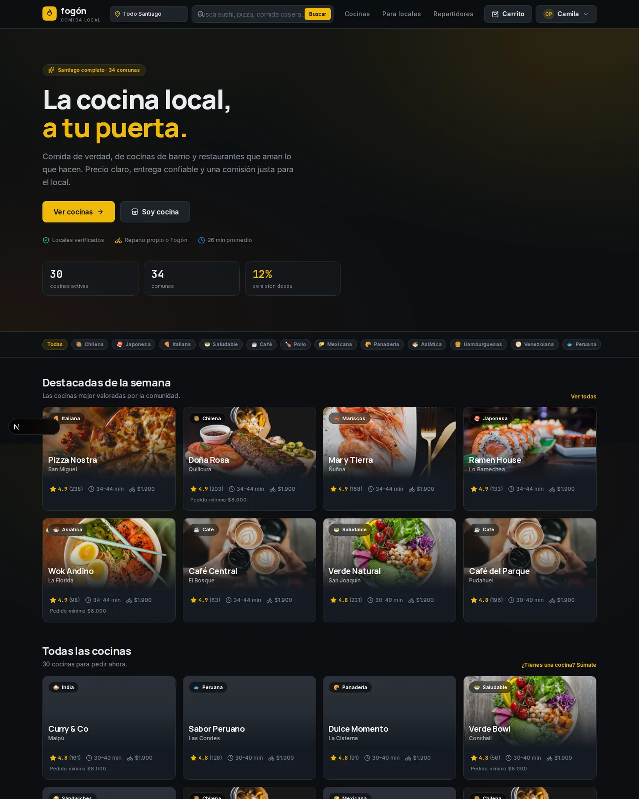
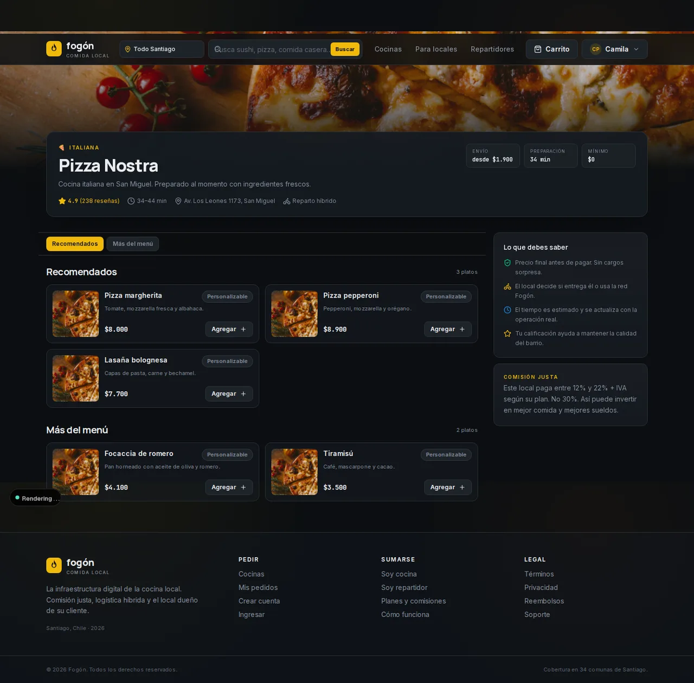
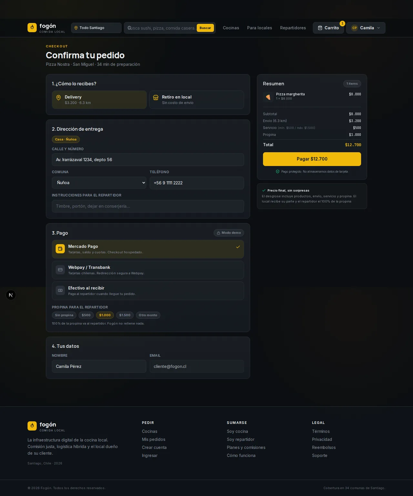
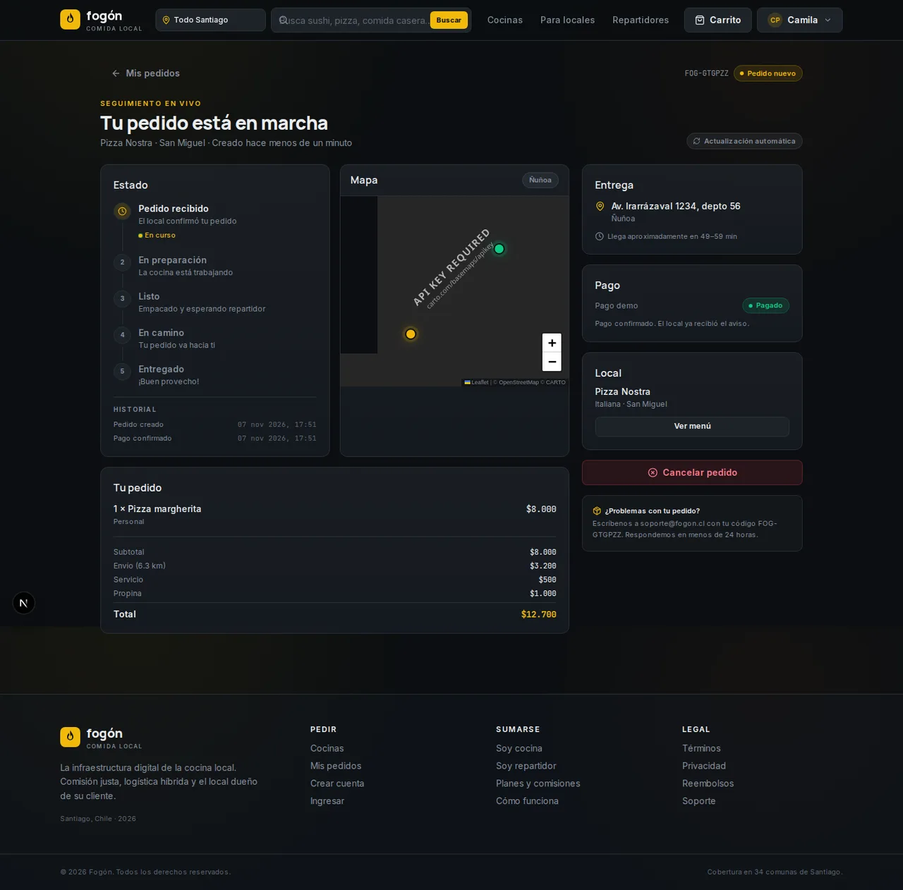
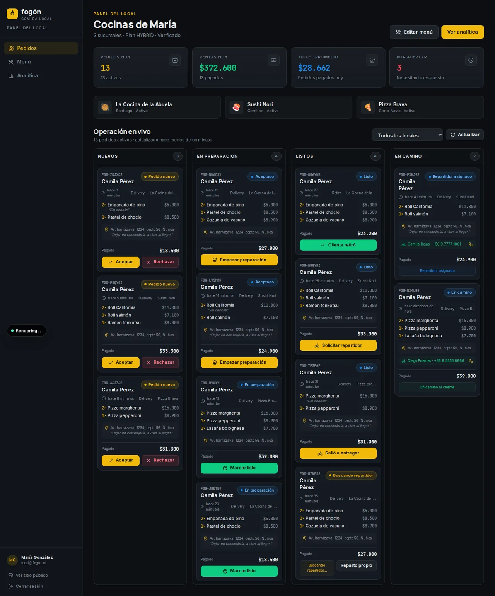
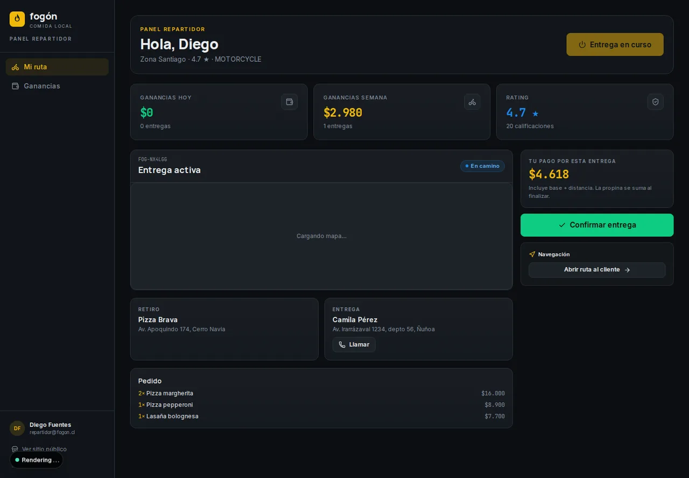
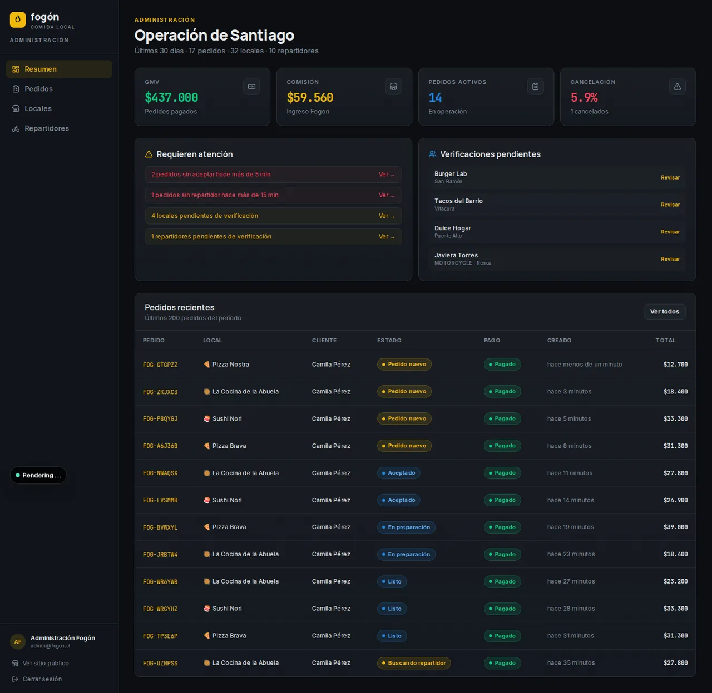
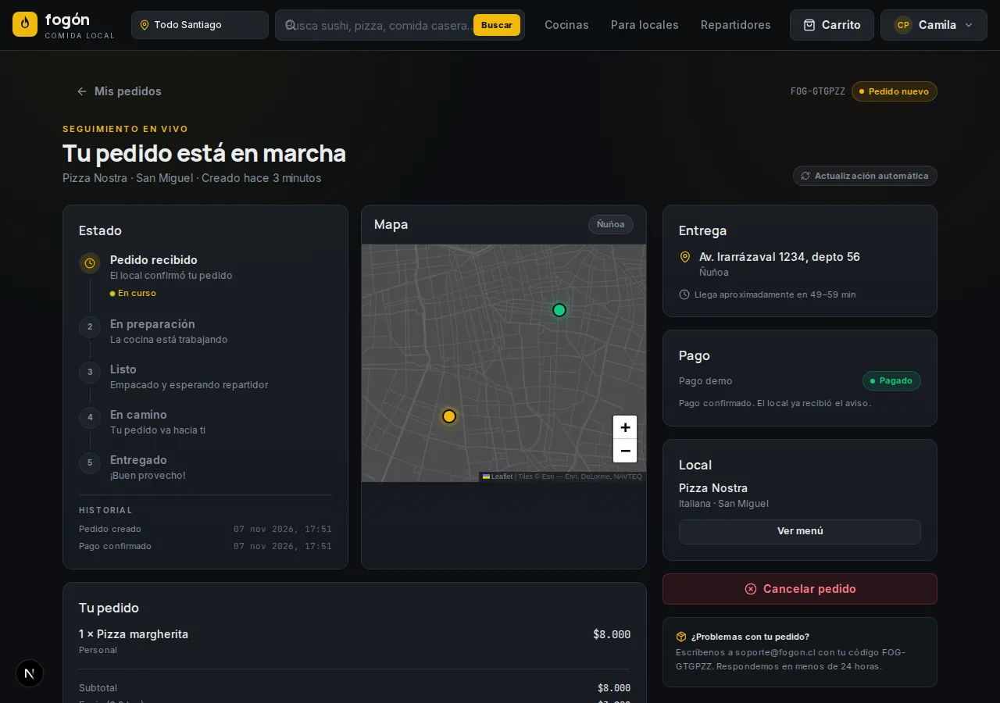

Dos versiones, un mismo oficio: dar de comer.
Una plataforma completa de pedidos, reparto y liquidación para locales de Santiago: cliente, comercio, repartidor y administración en el mismo sistema.

El pedido no termina cuando sale de cocina.
Un sistema de reparto coordina cuatro agendas distintas y un pago que tiene que cuadrar al final del día.
El cliente quiere ver el local, armar el carrito y saber cuándo llega. El comercio necesita aceptar, preparar y despachar. El repartidor necesita una ruta y una confirmación. Administración necesita comisiones, incidentes y auditoría.
Fogón V1 resolvió el ciclo completo con Next.js, Prisma y una app móvil Expo: catálogo, checkout, máquina de estados del pedido, asignación de repartidor, seguimiento y liquidación. La V2 agregó pagos Flow, deshabilitó el efectivo y sumó auditorías, multi-modelo y hardening.
Este repositorio conserva las dos versiones en carpetas separadas para que la evolución sea legible: no se borró la V1, se puso en contexto.
Del menú al reparto, con estados claros.
Cada rol ve solo lo que necesita y cada transición deja rastro.
Catálogo
Locales, categorías, platos, precios y disponibilidad. Los datos seed permiten probar sin depender de un comercio real.
Checkout
Carrito, dirección, propina y método de pago. La V2 usa Flow online; la V1 acepta Mercado Pago, Transbank y efectivo.
Máquina de estados
El pedido pasa por creado, aceptado, en preparación, listo, asignado, en camino, entregado o cancelado.
Reparto
El repartidor recibe una asignación, confirma retiro y entrega. El cliente ve el estado y el mapa.
Liquidación
Comisiones por rol, propinas y cierre. Administración audita cada movimiento.
Una app, cuatro experiencias.
Next.js concentra la lógica y la API; Expo lleva la operación a terreno; Prisma ordena la persistencia.
La base operativa
Pedidos, reparto, roles, comisiones y pagos con Mercado Pago, Transbank y efectivo.
La capa de confianza
Flow online, efectivo deshabilitado, auditorías, multi-modelo y hardening P0.
Pruebas en terreno
Capturas de escritorio, mobile, QA nativo y e2e; build y lint documentados.
El producto, pantalla por pantalla.
Ocho vistas del recorrido completo: cliente, local, checkout, pedido, comercio, reparto y administración.







Un stack para operar, no para lucirse.
La misma base tecnológica en las dos versiones, con la V2 endurecida para pagos online.
La app web y la API viven en Next.js. Prisma modela usuarios, locales, platos, pedidos, pagos y auditorías sobre PostgreSQL. La app móvil usa Expo para el repartidor. El despliegue documentado usa Docker, Caddy y Cloudflare; las credenciales se inyectan por entorno.
Fogón · pedidos y reparto, de V1 a V2
Recorrido por el código real de Fogón: el modelo de cuatro roles, el pedido como registro contable, comisiones, reparto y la evolución de V1 a V2 con Flow, efectivo cerrado y hardening.
Fogón · pedidos y reparto, de V1 a V2
Recorrido por el código real de Fogón: el modelo de cuatro roles, el pedido como registro contable, comisiones, reparto y la evolución de V1 a V2 con Flow, efectivo cerrado y hardening.
Los fragmentos son código real de v1/ y v2/; se omitieron datos de clientes, direcciones, correos, teléfonos y credenciales.
Todo está escrito.
Del arranque rápido a las decisiones de ingeniería: qué hace, cómo se opera y dónde están los límites.
| Documento | Qué encontrarás | |
|---|---|---|
| README | Visión, roles, arranque y estado del proyecto. | Abrir |
| V1 README | La versión original, con su alcance y decisiones. | Leer |
| V2 README | Pagos Flow, auditorías y hardening. | Leer |
| Datasheet | Operación, roles y flujos. | Leer |
| Developer | Modelo de datos, estados y despliegue. | Leer |
Lo que no promete.
Un proyecto serio también se explica por lo que deja fuera.
Preguntas típicas
¿Por qué dos carpetas?
Porque la V2 cambia pagos y endurece la operación. Conservar la V1 permite entender la evolución.
¿Qué pago usa la V2?
Flow online (Webpay, MACH, BCI) y efectivo deshabilitado. La V1 conserva Mercado Pago, Transbank y efectivo.
¿Se puede probar sin base de datos?
Sí, con el seed de Prisma y las variables de entorno de ejemplo.
¿Las capturas son reales?
Son capturas de la aplicación con datos demo; no exponen datos de clientes.
¿Lo probamos?
El código, la documentación y las capturas están en el repositorio.